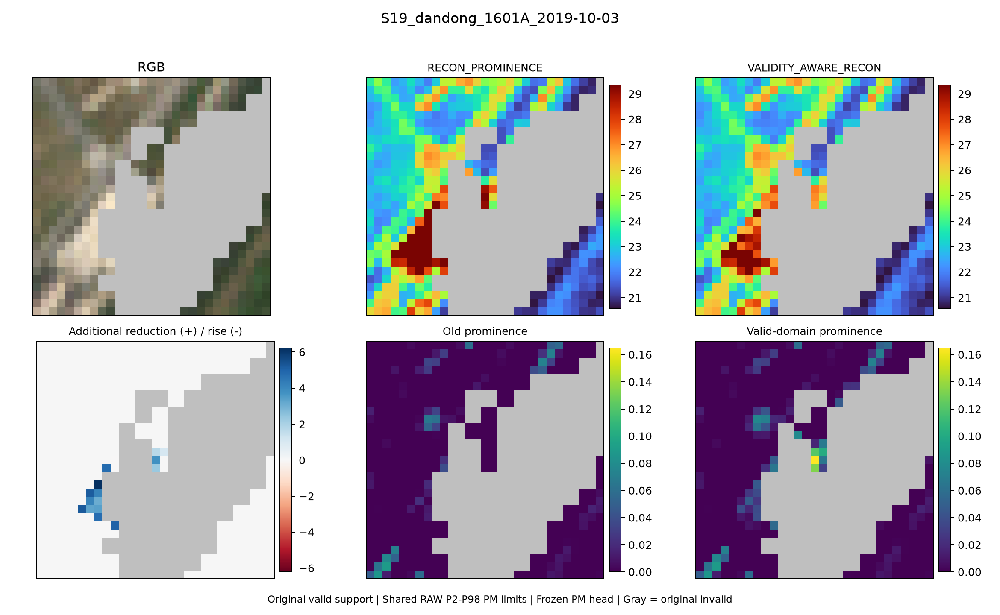
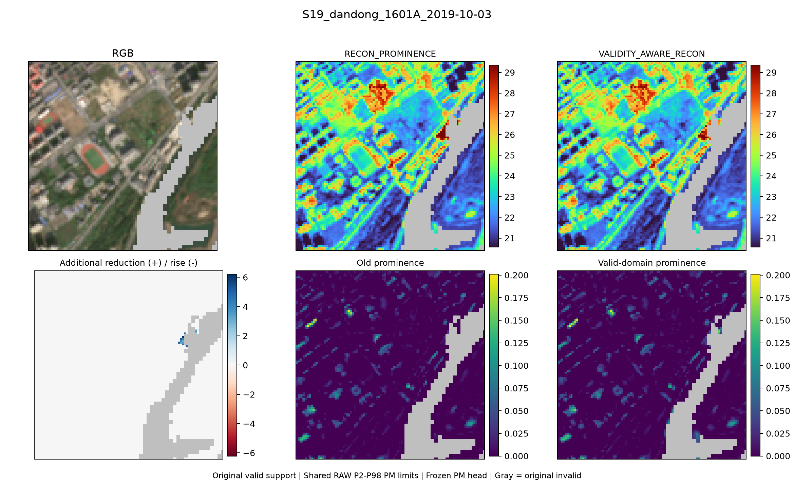
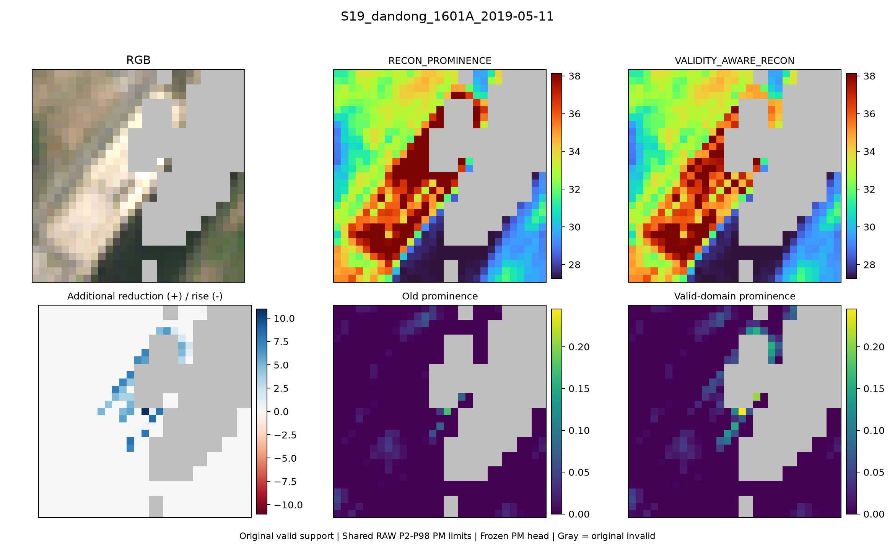
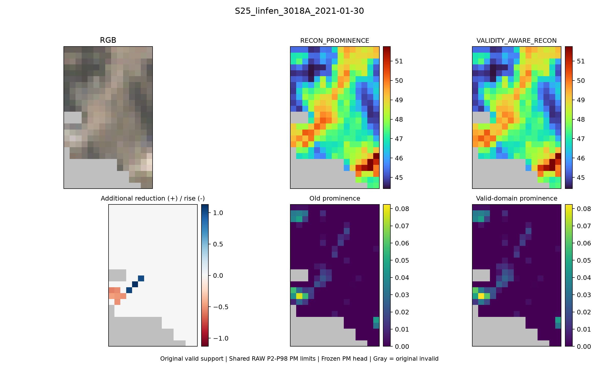
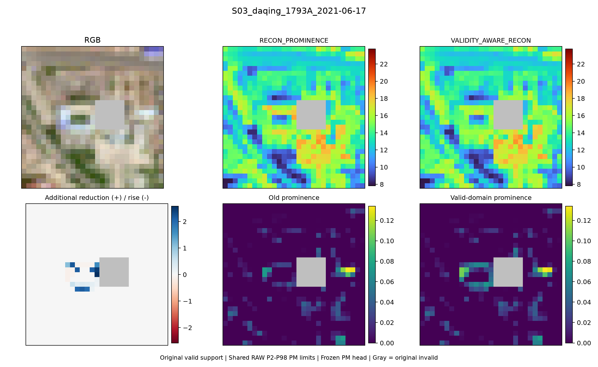
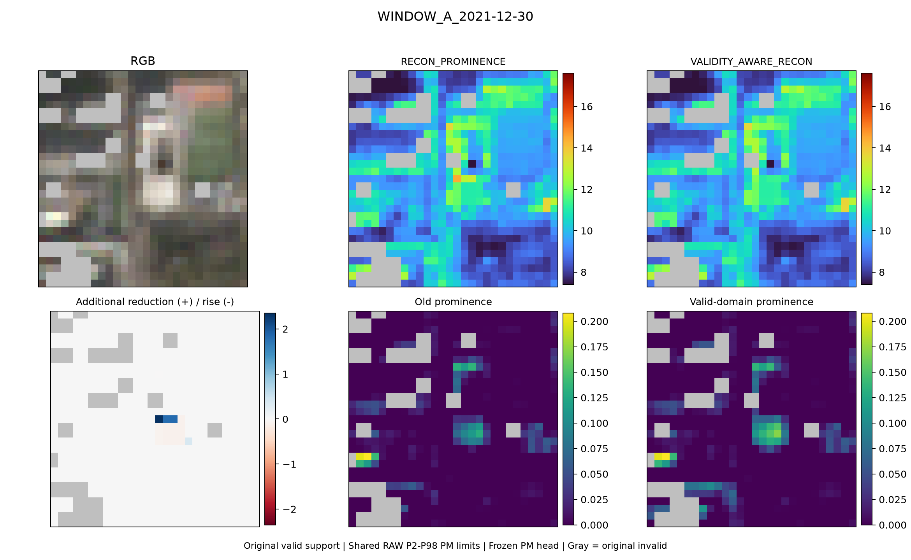
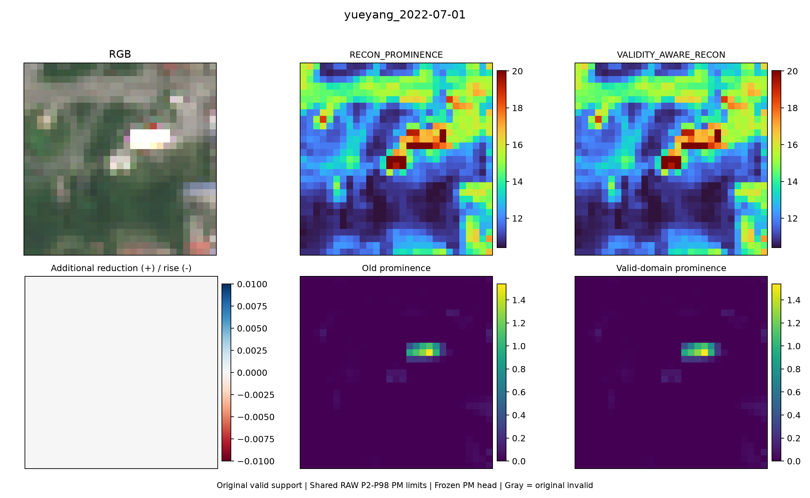
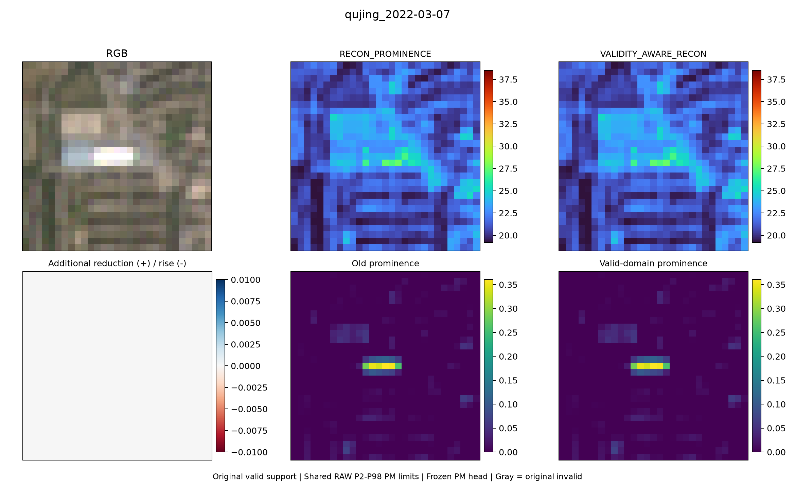
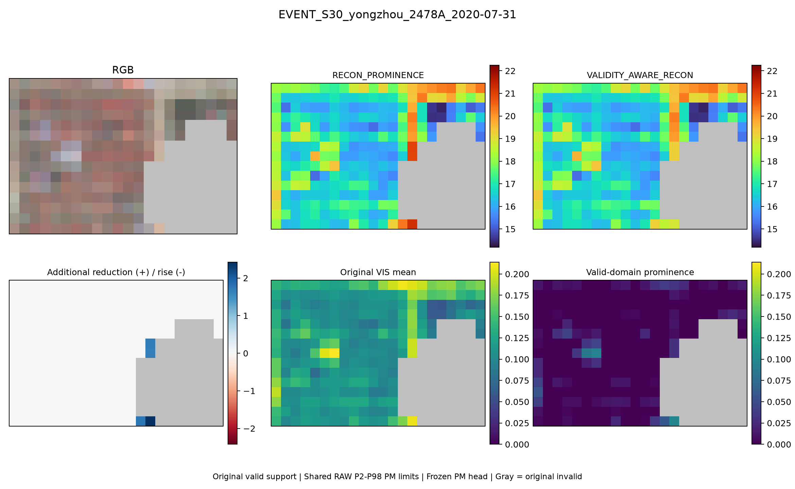

唯一改动为缺测不参与高灰度连通尺寸，其他RECON规则保留。全部68个全valid场逐元素相同。灰色始终是原无效支持。
S19_dandong_1601A_2019-10-03

S19_dandong_1601A_2019-10-03

S19_dandong_1601A_2019-05-11

S25_linfen_3018A_2021-01-30

S03_daqing_1793A_2021-06-17

WINDOW_A_2021-12-30

yueyang_2022-07-01

qujing_2022-03-07

EVENT_S30_yongzhou_2478A_2020-07-31
